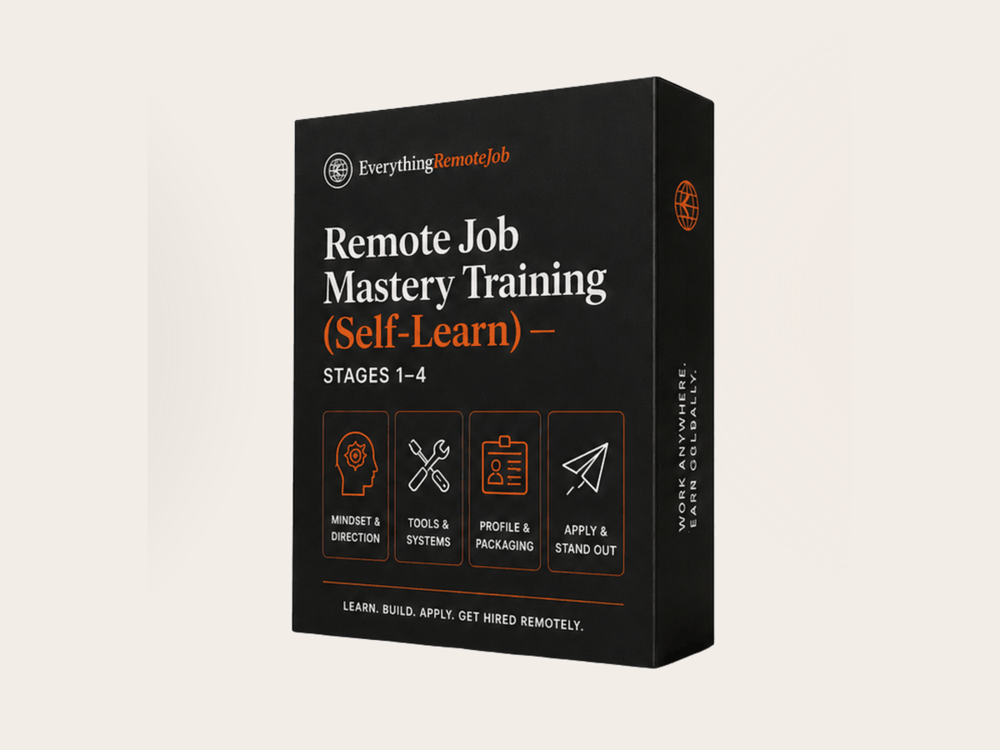

Your Starting Line · One ladder, in order
Four routes. Find your rung.
The same work, at four depths: you learn it alone, you build it with us, we build it for you, or we work it with you, 1:1, until the offer is signed. Nobody needs all four — you need the one that matches where you actually are.
Not sure where that is? Find your leak first — four questions, ninety seconds →

The Self-Learn Pack
The same four stages and the same rubrics we run with paying cohorts, written to be worked alone. Twenty sessions, four finished deliverables, no start date to wait for and no cohort to keep pace with.
- 01 · The Self-Learn Manual — fifty-six pages carrying the whole of the course: twenty guided sessions with the teaching, the exercises, and the written specification for each of the four deliverables you build.
- 02 · Slides, kit and prompt pack — the visual companion for all four stages, the templates and worksheets you fill in rather than read, and the AI prompt library for CVs, adverts, interviews and negotiation.
- 03 · The legacy participant guide — the real workbook issued to a live cohort, so you can see exactly how this material was run day by day rather than guessing at the intended pace.
- 04 · The private community — where you post a deliverable for a second pair of eyes, ask the question you are embarrassed by, and see what people at your stage are finding.
There is no live teaching, no written verdict on your work, no certificate — those are Route 2. See what is in the pack →
Learn more →
Foundation Training
Four five-day sprints, twenty days, and every day ends with a real deliverable you keep. You build the assets yourself and learn the system underneath them, so you can rebuild them for any role later on.
- 01 · Remote Mindset Blueprint — two 90-minute deep-work blocks daily, the Pomodoro Protocol, three measurable KPIs each morning and a structured end-of-day report each evening. You leave holding your own Remote Operating System.
- 02 · The Digital Toolkit — Zoom, Meet and Teams run properly, cloud recordings with auto-transcription, a real project board, and AI Fluency: prompt craft, AI-assisted drafting, and knowing when not to reach for it.
- 03 · Async Communication Mastery — Zero-Follow-Up emails that never trigger a clarifying reply, the Batch Message Protocol, warmth that survives plain text, and your own Working With Me manual. Five communication assets.
- 04 · Start Your Remote Career — a remote-first ATS-compliant CV, a LinkedIn Zone-1 summary, a curated two-to-three project portfolio with read-me briefs, and a two-minute STAR video answer. Together these are the Global Ready Package.
Finish certified, and choose the hour you can actually keep — weekdays 7 PM, weekdays 8 PM, or weekends. Same modules, same fee, same certificate.
Learn more →
Job Application DFY
Seven days of building, then a month of hunting, almost none of it done by you. Our team builds every asset, installs the application engine, then works the pipeline beside you until an offer is signed.
- 01 · The ATS-Defeating Global CV — written for you on days one and two. Your local experience translated into the terms global recruiters actually search for, in a structure built to survive the screening software.
- 02 · The LinkedIn Outbound Funnel — rebuilt for you on days three and four with the exact recruiter-search keywords that make you findable, turning a dead profile into something that pulls invitations inward.
- 03 · The Autonomous Application Engine — installed on days five and six. It sources and applies to 30+ pre-vetted global roles every week on your behalf, without the guesswork or the silence.
- 04 · The Multi-Currency Negotiation Playbook — handed over on day seven. Word-for-word scripts for a final-round panel, so you can negotiate in USD, EUR or GBP while still keeping your cost advantage.
Every asset is yours permanently — you approve each one and then keep it, whether or not you ever work with us again. See how it works →
Learn more →The Inner Circle
Seven weeks, one seat, one outcome. Not coaching and not a group chat — this is direct private consultancy, where we work your live search beside you, week by week, until an offer is signed.
- 01 · The Audit and The Profile — weeks one and two tear down your current positioning and rebuild it. By the end you know exactly what you are selling and who needs to buy it.
- 02 · The Outreach Engine — week three. We build your outreach system together and write your first ten messages live during the session, and you send every one of them before it ends.
- 03 · The Interview Room and Negotiation Table — weeks four and five. Mock interviews using the consulting framework, so you stop auditioning and start diagnosing, then salary research, ROI anchoring and counter-offer strategy.
- 04 · The Launch and The Residency — week six onward. Full support through live applications, responses and decisions, then the private community, the weekly accountability calls, and lifetime access to the private alumni network.
Admission is verified before payment — you apply first, and we only take the seat if we can genuinely work it properly. Request admission →
Learn more →Which comes first?
They are one ladder, in order — not four competing options. If you want the whole curriculum today and you will genuinely work it alone, take the Self-Learn Pack. If you want the same four stages taught live, with your work marked and a certificate at the end, that is Foundation Training. If your skills are solid but the hunt itself is the problem, go to Job Application DFY. If you're a stable professional who wants it worked 1:1, apply to the Inner Circle. Still unsure? Three questions on the register page will place you → Still torn? The two, compared line by line →